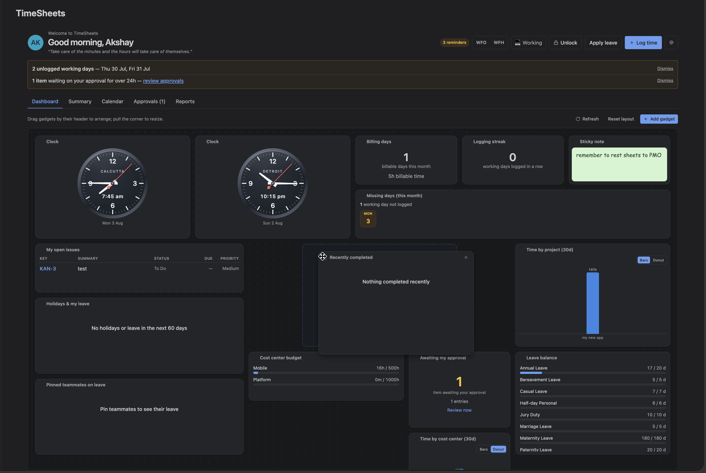
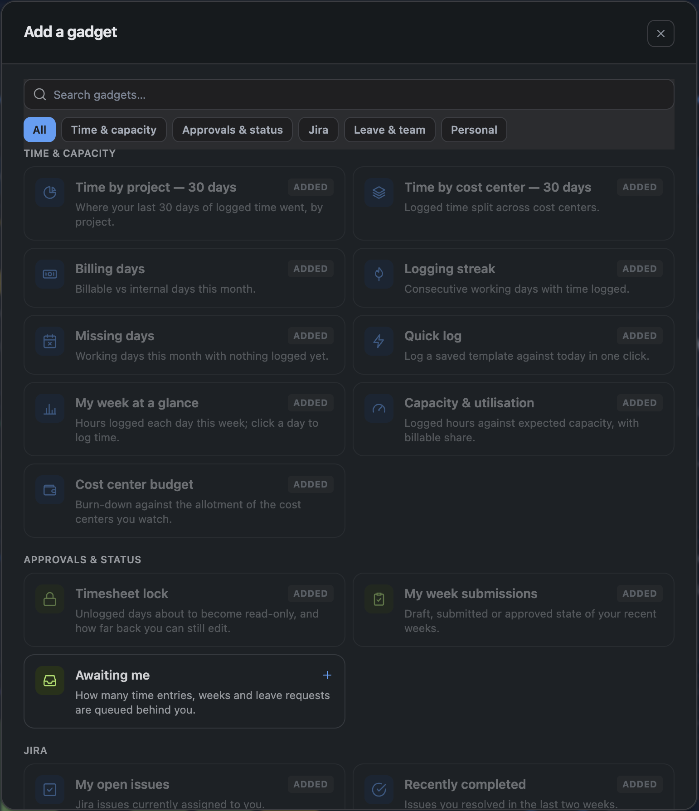

The Dashboard is the first thing most people see. It is a grid of gadgets that each person arranges for themselves — what a delivery lead wants on screen is not what a developer wants.
1. What you start with
A new dashboard opens with eleven gadgets in three rows — what to act on, what is outstanding, then context:
| Row | Gadgets |
|---|---|
| Act | Quick log · My week · Capacity · Billing days |
| Outstanding | Missing days · My week submissions · Leave balance · Logging streak |
| Context | Time by project · My open issues · Holidays & my leave |
There are 23 gadgets in total; the rest are one click away in the picker.
*Awaiting me* is deliberately not in the default set — it is useful only if you approve for a project, and would be a permanently empty tile for everyone else. Add it if it applies to you.
2. Reading a gadget
Every gadget has the same header: a small coloured square, its name, and at most one control on the right — a value, a period, or a toggle. Everything else is in the body.
The coloured square is the gadget's category, so you can find the Jira ones or the leave ones without reading a single title.
| Colour | Category |
|---|---|
| Blue | Jira |
| Purple | Time & capacity |
| Green | Leave & team |
| Amber | Approvals & status |
| Grey | Personal |
While a gadget is loading it keeps its frame and shows placeholder lines, so the dashboard does not reflow as things arrive. A gadget that cannot load says why and offers Try again rather than sitting empty.
3. Arrange mode
The dashboard is fixed until you press Arrange. That is deliberate: with drag handles permanently visible, simply reading the dashboard felt like the layout was about to move.
In arrange mode each card gains a grip, a remove control and a resize corner. Drag by the header to move, pull the bottom-right corner to resize, and press Done when it looks right. Reset layout appears there too.
The layout saves automatically, and is stored per screen size — the arrangement you build on a wide monitor does not become an unusable stack on a laptop.

4. Adding gadgets
Add gadget opens the picker. Search by name or description, or filter by category to browse when you do not know what you are looking for.
A gadget already on your dashboard shows Added and cannot be added twice — except the sticky note, countdown and clock, which are useful several times over and say so.

5. The weekly submit bar
In weekly approval mode a bar appears at the top of the Dashboard for the current week, showing its state and the button to submit it. On sites using per-entry approval it renders nothing at all.
6. Jira gadgets
My open issues lists what is assigned to you, and — the part a timesheet app can add to a Jira list — how much you have logged against each one this week. Nothing logged shows nothing rather than a zero; an absence is not a measurement.
Status is a lozenge coloured by Jira's own status category rather than the status name, so a renamed workflow still reads correctly: grey for to-do, blue for in-progress, green for done.
Sprints shows how far through each sprint is and how many days are left, with the last two days called out. The bar appears only when the sprint has a start date to measure from — where there is nothing honest to draw, it shows the dates alone.
7. Charts
Time by project and Time by cost centre switch between bars and a donut from the control in the gadget's header. The donut carries the total in the middle, and the figure for whichever slice you point at.
8. The clock
A digital or analog clock for any time zone, and worth adding more than once if you work across them.
The analog dial's hands are animated by the browser rather than redrawn by the app, so a clock on your dashboard costs essentially nothing to run. If your system is set to reduce motion, the hands hold still and step instead of sweeping.
9. Refreshing
Gadgets load when the Dashboard opens and can be refreshed together with Refresh. They do not poll continuously — a dashboard that re-queries every few seconds is expensive for everyone on the site.